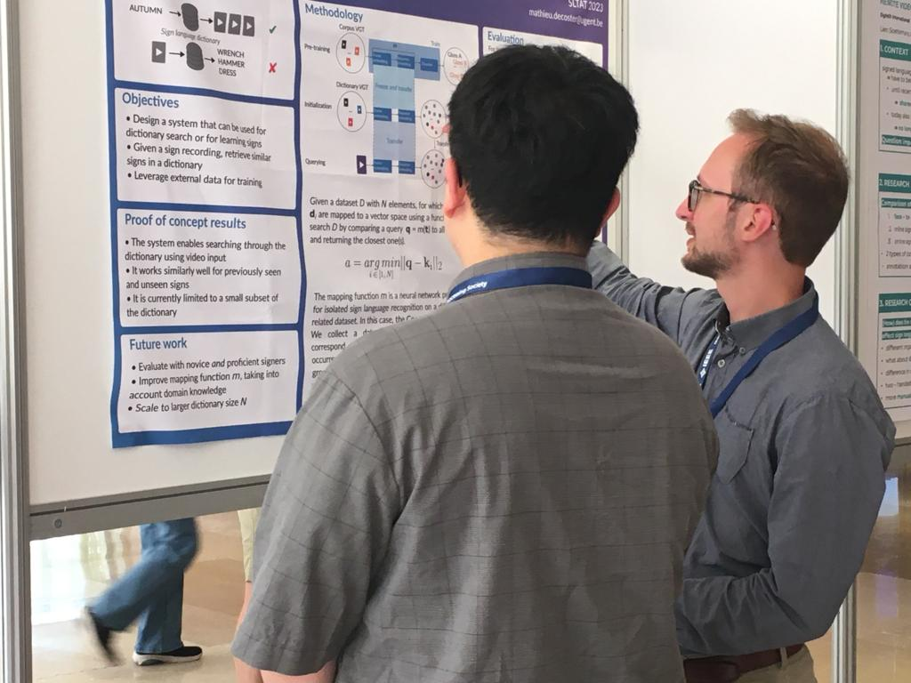

13 June 2023
I recently attended the eighth edition of the Sign Language Translation and Avatar Technology (SLTAT) workshop at ICASSP 2023. The workshop featured talks and presentations from industry and academia on topics ranging from sign language avatars and sign language recognition to data collection.

I presented my work on video-based sign language dictionary querying and had many interesting discussions with the other attendants. We generated a lot of ideas for applications of the proposed methodology.
The paper discusses how dictionary search can be implemented when there is a distinct lack of data (which is, unfortunately, almost always the case in the sign language processing field). By first training a model on a different but related dataset, we can leverage transfer learning to map dictionary videos to a vector space. Then, a simple vector search can be performed simply by computing pairwise Euclidean distances between query videos and dictionary videos: essentially k-nearest neighbour search. I invite you to read the paper if you want to learn more.
This work resulted from a proof of concept created for the 2022 HRI Winterschool on Embodied AI, which featured a visit to our lab. It was exciting to be able to demonstrate a tangible application of sign language recognition research, and to then discuss it at SLTAT.
Overall, the workshop was inspiring and I am looking forward to seeing where the field goes next!